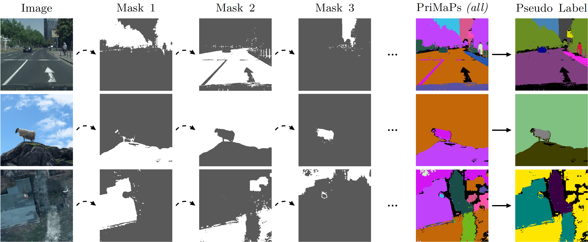
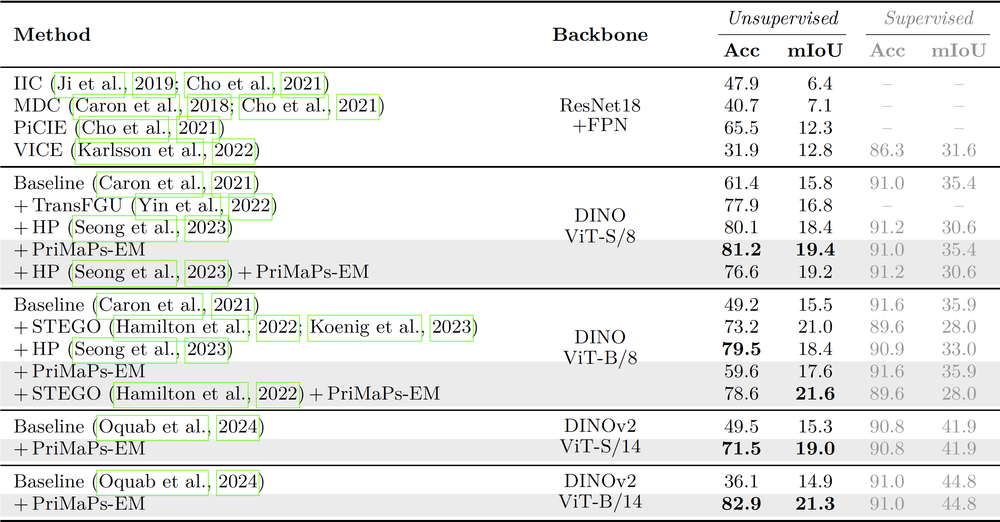
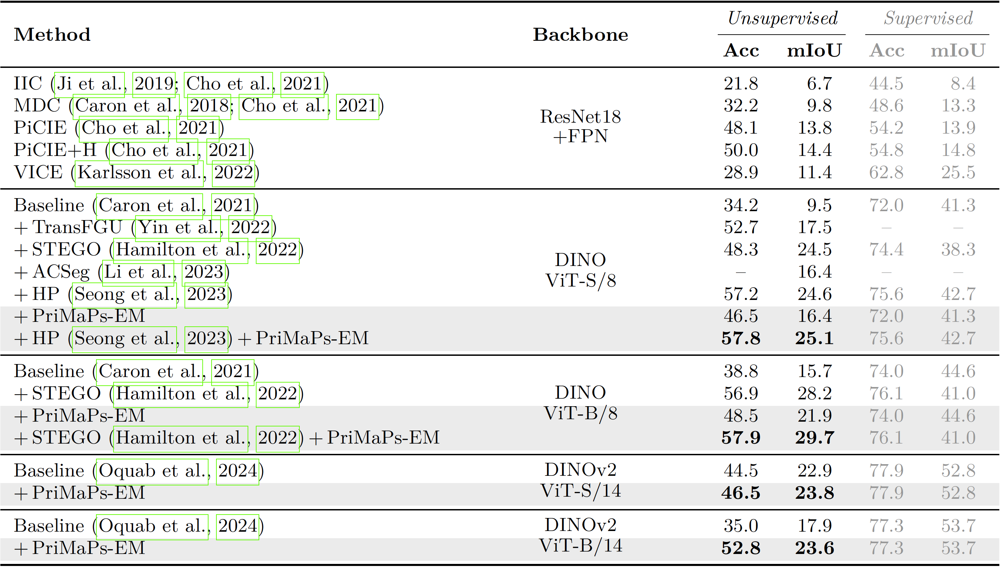
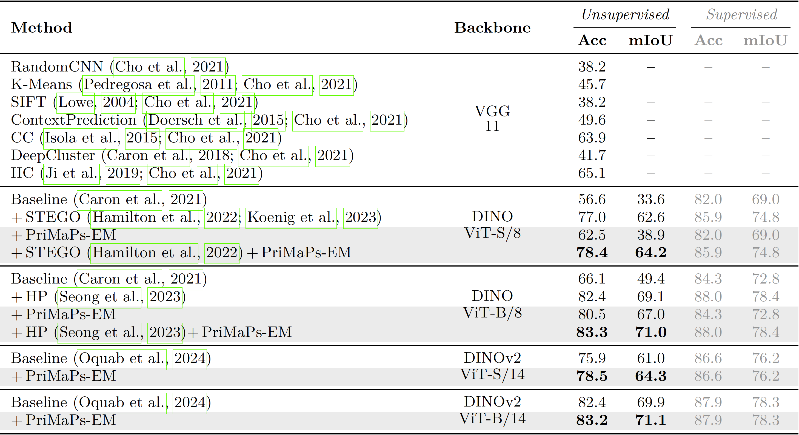
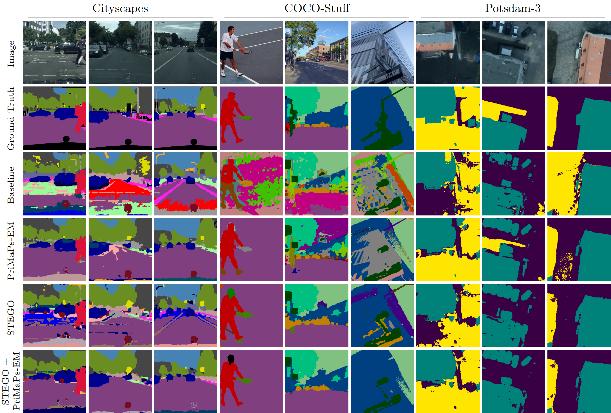

We present PriMaPs – Principal Mask Proposals – decomposing images into semantically meaningful masks based on their feature representation. This enables unsupervised semantic segmentation by fitting class prototypes to PriMaPs with stochastic expectation-maximization.
Unsupervised semantic segmentation aims to automatically partition images into semantically meaningful regions by identifying global categories within an image corpus without any form of annotation. Building upon recent advances in self-supervised representation learning, we focus on how to leverage these large pre-trained models for the downstream task of unsupervised segmentation. We present PriMaPs – Principal Mask Proposals – decomposing images into semantically meaningful masks based on their feature representation. This allows us to realize unsupervised semantic segmentation by fitting class prototypes to PriMaPs with a stochastic expectation-maximization algorithm, PriMaPs-EM. Despite its conceptual simplicity, PriMaPs-EM leads to competitive results across various pre-trained backbone models, including DINO and DINOv2, and across datasets, such as Cityscapes, COCO-Stuff, and Potsdam-3. Importantly, PriMaPs-EM is able to boost results when applied orthogonally to current state-of-the-art unsupervised semantic segmentation pipelines.
PriMaPs-EM architecture (left): An image I and its augmented version I′ are embedded by the frozen self-supervised backbone F, resulting in the dense features f and f′. The segmentation prediction y by the momentum class prototypes θM arises via the dot product with f. Likewise, y′ arises from the dot product of the running class prototypes θR with f′. Pseudo labels P* are constructed using PriMaPs, I, and y. We use the pseudo labels to optimize θR, applying a focal loss. θR is gradually transferred to θM by means of an EMA. PriMaPs pseudo label generation (right): Masks P are proposed by iterative binary partitioning based on the cosine similarity of the features of any unassigned pixel to their first principal component’s nearest neighbor feature. Gray indicates these iterative steps. Next, the masks P are aligned to the image I using a CRF. Finally, a per-mask pseudo-class ID is assigned using majority voting based on the segmentation prediction y, resulting in the pseudo label P*.
Cityscapes – PriMaPs-EM (Ours) comparison to existing unsupervised semantic segmentation methods, using Accuracy and mean IoU (in %) for unsupervised and supervised probing.
COCO-Stuff – PriMaPs-EM (Ours) comparison to existing unsupervised semantic segmentation methods, using Accuracy and mean IoU (in %) for unsupervised and supervised probing.
Potsdam-3 – PriMaPs-EM (Ours) comparison to existing unsupervised semantic segmentation methods, using Accuracy and mean IoU (in %) for unsupervised and supervised probing.
Qualitative results for the DINO ViT-B/8 baseline, PriMaPs-EM (Ours), STEGO, and STEGO+PriMaPs-EM (Ours) for Cityscapes, COCO-Stuff, and Potsdam-3. Our method produces locally more consistent segmentation results reducing overall misclassification compared to the corresponding baseline.
PriMaPs-EM provides modest but consistent benefits over a wide range of baselines and datasets and reaches competitive segmentation performance w. r. t. the state-of-the-art using identical hyperparameters across all backbones and datasets. Recalling the simplicity of the techniques behind PriMaPs, we believe that this is a significant result. PriMaPs-EM constitutes a straightforward, entirely orthogonal tool for boosting unsupervised semantic segmentation.
@article{Hahn:2024:BUS,
title = {Boosting Unsupervised Semantic Segmentation with Principal Mask Proposals},
author = {Oliver Hahn and Nikita Araslanov and Simone Schaub-Meyer and Stefan Roth},
journal = {Transactions on Machine Learning Research (TMLR)},
year = {2024},
}